If you have a taste for NP-completeness, Sudoku, or literate programming, then this one’s for you.
All of the code described in this article is available here.
1 Introduction
Quarantine is in full swing, and after watching a disturbing amount of TV, you plowed through a book of Sudoku puzzles that turned up in the basement. Now they’re gone, and you’re looking for something more. Bigger. Monstrous, you might say. Unfortunately, the giant Sudoku puzzles (think 16×16 or 25×25) are not quite so easy to find in any quantity. It turns out, though, that with a little effort, you can make machines churn them out while you sleep.
In this article we will
- consider the structure of the Sudoku board;
- use that structure to capture, in a general way, common heuristics for solving Sudoku puzzles;
- employ both constraint propagation and backtracking to create a suitably fast Sudoku solver; and
- use that solver as building block for generating Sudoku puzzles of any size we might desire.
By the end, we’ll have implemented a library for dealing with Sudoku, as well as a small collection of command line tools for generating, solving, and formatting puzzles.
2 The Board
Before endeavoring to operate on Sudoku boards, we should first pin down some useful representations, as well as conversions between them.
2.1 Board Divisions
The classic Sudoku board consists of a 9×9 grid of cells, with a 3×3 grid of boxes, each containing a 3×3 grid of cells, overlaid:
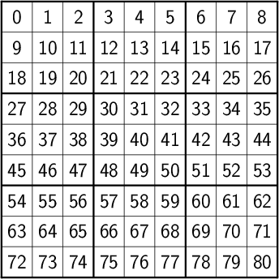
where the cells have been numbered in row-major order. Each cell is a member of a set of three divisions, namely
- rows:
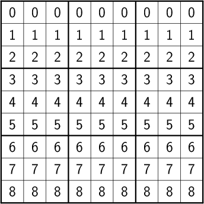
- columns:

- boxes:
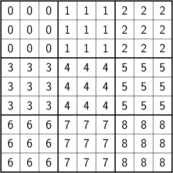
Of these, the most interesting division of the board is into boxes. The board board can be viewed as a 3×3 grid of boxes, each a 3×3 grid of cells, resulting in a grid of 34 cells arranged into 32 rows and 32 columns, for a grand total of 3×32 distinct divisions. When the board is complete, each cell will contain a number from 1 to 9 (or 32) inclusive. Every interesting dimension is describable in terms of powers of 3, which we can think of as the order of a standard board. We can now think of Sudoku (or Sudoku-like) boards a bit more generally. Given a board of order \(\omega\), for any cell \(c\in [1, \omega^4]\), we can find the row number \(I\) as
\[I(c) = \left\lfloor\frac{c}{\omega^2}\right\rfloor\]
the column number \(J\) as
\[J(c) = c\bmod \omega^2\]
and the box number \(B\) as
\[B(c) = \omega\times\left\lfloor\frac{I(c)}{\omega}\right\rfloor + \left\lfloor\frac{J(c)}{\omega}\right\rfloor.\]
This generalization allows us to handle larger boards with ease. For simplicity, the discussion and examples below will center on conventional order 3 boards unless otherwise specified; even so, the principles remain the same for other orders.
If we sequentially number divisions like
| division | start | end |
|---|---|---|
| rows | 0 | \(\omega^2 - 1\) |
| columns | \(\omega^2\) | \(2\omega^2 - 1\) |
| boxes | \(2\omega^2\) | \(3\omega^2 - 1\) |
then we can write a function to compute a mapping from cells to divisions, as well as an inverse mapping from divisions to cells:
⟨functions⟩ ≡ ↓def board_divs(order): ''' generates a dictionary (cell2divs) mapping cells to their various divisions in boards of the given order. Also generates a complementary mapping, div2cells. Returns (cell2divs, div2cells). ''' n = order**2 box = lambda i, j: i//order * order + j//order cell2divs = dict(enumerate({i, n + j, 2*n + box(i, j)} for i in range(n) for j in range(n))) return cell2divs, transpose(cell2divs)
where
def transpose(m): ''' given a binary matrix represented as a dictionary whose values are sets, and where a 1 at (i,j) is indicated by j in m[i] return the transpose of m. ''' t = {} for i, js in m.items(): for j in js: t.setdefault(j, set()).add(i) return t
Besides allowing more concise expression of algorithms operating on Sudoku boards, thinking in terms of cells and divisions opens the door to adapting some of what we develop here to Sudoku variants featuring irregularly-shaped divisions (like squiggly Sudoku).
2.2 Logical Representation
We’ll need a convenient representation of the board state at any given time, as well as a ways to sensibly change that state. For that, we’ll define a simple class:
⟨data types⟩ ≡class board: 'Utility class for representing and tracking board state.' ⟨board initialization⟩ ⟨cell marking⟩ ⟨copying⟩
Each cell is either known or unknown. For the known cells, we need only track their values. For the unknown cells, however, we need to either track or compute the values that they may possibly take. Since the requirements for the two cell classes are different, we handle them separately.
⟨board initialization⟩ ≡def __init__(self, known, unknown, cell2divs, div2cells): ''' known dictionary mapping known cells to their respective values unknown dictionary mapping unknown cells to sets of possible values cell2divs, div2cells complementary mappings describing the board structure, such as those produced by board_divs ''' assert not set(known) & set(unknown) self.known = known self.unknown = unknown self.cell2divs = cell2divs self.div2cells = div2cells
Solving a Sudoku involves repeatedly marking the board until no empty cells remain, subject to the constraint that each division contains one each of the numbers from 1 to 9 inclusive. With each marking, we assert knowledge about a previously unknown cell, and the possible values that can be taken by unknown cells sharing a division become more constrained. To track this,
⟨cell marking⟩ ≡ ↓def mark(self, cell, val): 'set cell to val, updating unknowns as necessary' self.known[cell] = val self.unknown.pop(cell, None) for div in self.cell2divs[cell]: for cell2 in self.div2cells[div]: self.elim(cell2, val) def elim(self, cell, val): "remove val from cell's possibilities" self.unknown.get(cell, set()).discard(val)
This is the basic mechanism of constraint propagation that ultimately allows us to develop usefully fast solution techniques. For brevity, whenever we speak of marking a cell, we’ll assume that the possibilities for other cells are updated as necessary, too.
Sometimes we may not know that a given marking will work out—perhaps we’re guessing—so we should support marking cells speculatively and recovering when we realize how wrong we are. The simplest method is to mark a copy of the current board state:
⟨cell marking⟩ +≡ ↑def marked(self, cell, val): 'returns a new board, with cell marked as val and possibilities eliminated' new = self.copy() new.mark(cell, val) return new
⟨imports⟩ ≡ ↓import copy
⟨copying⟩ ≡def copy(self): 'copies board' return self.__class__(copy.deepcopy(self.known), copy.deepcopy(self.unknown), self.cell2divs, self.div2cells)
2.3 Textual Representation
Humans hardly want to look at Python dictionaries when there are better representations available, so let’s work out a textual representation for our boards, and let’s make it flexible enough to handle boards of any order.
2.3.1 Converting from Strings
We’ll impose the following requirements on strings that represent Sudoku boards of any order \(\omega\):
- Each cell will be represented by an integer (if known) or a ’.’ (if unknown).
- The number of cells must be \(\omega^4\), where \(\omega\) is some integer.
- Cells can be separated by any other character.
- Values for known cells must be in \([1, \omega^2]\).
These rules will allow us to handle
1 3 | . . . . | 3 1 ----+---- 3 1 | . . . 2 | 1 3
as easily as
1 3 . . . . 3 1 3 1 . . . 2 1 3
or
1 3 . . . . 3 1 3 1 . . . 2 1 3
They also allow us to compute the order directly from the number of cells.
def load_board(s, validate_vals=True): ''' given a string representing a board, returns a board object. For a board of a given order: - Order is computed as the fourth root of board length, and it must be an integer. - Each cell must be represented by an integer in [1, order**2] inclusive, or `.' to denote unknown cells. This check can be disabled by setting validate_vals to False. - Cells must be separated from each other by any sequences of characters in /[^0-9.]+/. On failure, raises ValueError. ''' vals = [cell for cell in ''.join(c if c in '0123456789.' else ' ' for c in s).strip().split() if cell.isdigit() or cell == '.'] order = int(len(vals) ** 0.25) n = order**2 if len(vals) != order**4: raise ValueError bd = blank(order) for (cell, val_) in enumerate(vals): if val_ == '.': continue val = int(val_) if validate_vals and (val < 1 or val > n): raise ValueError bd.mark(cell, val) return bd
where
def blank(order): 'generate a blank board' n = order**2 possible_vals = set(range(1, n + 1)) return board({}, {i:set(possible_vals) for i in range(n**2)}, *board_divs(order))
It would also be good know whether a board brought in from the outside world is indeed valid, in the sense of having no conflicting cell values in any division.
def isvalid(bd): ''' returns True if - no known cells' values conflict - no unknown cell's possibilities conflict with any known cell's value ''' return not any(val0 in {bd.known.get(cell)} | bd.unknown.get(cell, set()) for (cell0, val0) in bd.known.items() for cell in neighbors(bd, cell0) if cell in bd.known and cell != cell0) def neighbors(bd, cell0): return union(bd.div2cells[div] for div in bd.cell2divs[cell0]) def union(xss): return {x for xs in xss for x in xs}
2.3.2 Converting to Strings
Once we’ve solved a puzzle or otherwise modified a board, we’d like to get a
readable representation back out. Given that there are further use cases for a
completed Sudoku board, like deriving Sudoku puzzles of varying difficulty, it
should be loadable via load_board, like:
8 3 7 | 1 2 6 | 9 5 4 9 5 4 | 3 8 7 | 1 6 2 2 1 6 | 4 5 9 | 3 7 8 ------+-------+------ 7 . 9 | . 4 5 | 8 1 3 3 4 5 | 9 1 8 | 6 2 7 1 . 8 | . 7 3 | 4 9 5 ------+-------+------ 4 8 1 | 5 6 2 | 7 . 9 5 9 3 | 7 . 1 | 2 8 6 6 7 2 | 8 9 4 | 5 3 1
def dump_board(bd): 'returns a "pretty printed" string representation of board bd' order = int((len(bd.known) + len(bd.unknown)) ** 0.25) n = order**2 svals = [str(bd.known[i] if i in bd.known else '.') for i in range(n**2)] width = max(map(len, svals)) fmt = lambda cell: ('%%%ds' % width) % cell n_x_n = [svals[i*n : i*n + n] for i in range(n)] cols_grpd = [' | '.join(' '.join(map(fmt, row[j*order : j*order + order])) for j in range(order)) for row in n_x_n] rows_grpd = ['\n'.join(cols_grpd[i*order : i*order + order]) for i in range(order)] rule = '\n' + ''.join('+' if c == '|' else '-' for c in cols_grpd[0]) + '\n' return rule.join(rows_grpd)
3 Solving Sudoku
Having a suitable representation of the board state, we can now work out how to
solve a Sudoku puzzle. All of the techniques discussed here rely on the
constraint propagation that board.mark performs automatically.
3.1 Deductive Techniques
Consider how a human might approach a grid like
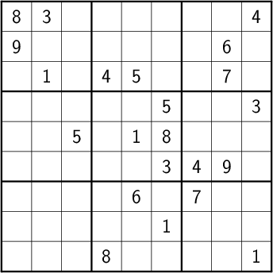
Let’s immediately reject the idea of blindly trying numbers until something works. Instead, let’s annotate the board with the remaining possibilities (called pencil marks) for each unknown cell, revealing our true situation:
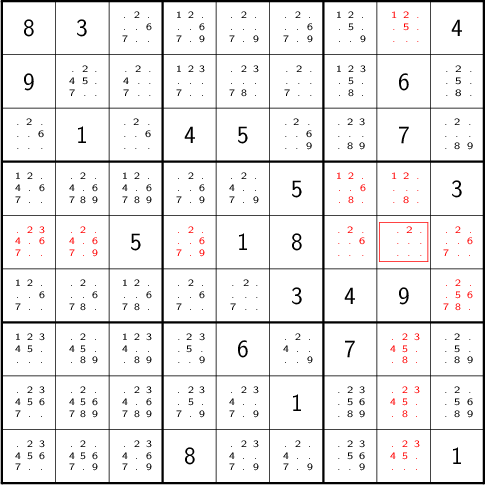
3.1.1 Single Candidate/Naked Single
The cell indicated with a red box can only take on a value of 2; if we mark it as such, then we have to remove 2 from the possibilities for the remaining cells that share a row, column, or box (the cells to be modified are indicated with red digits).
The process can be expressed as
def mark_single_vals(bd): 'applies the "single candidate" (a.k.a. "naked single") rule' marked = False for (cell, vals) in list(bd.unknown.items()): if len(vals) == 1: bd.mark(cell, set(vals).pop()) marked = True return marked
Marking the cell with a 2 gives us
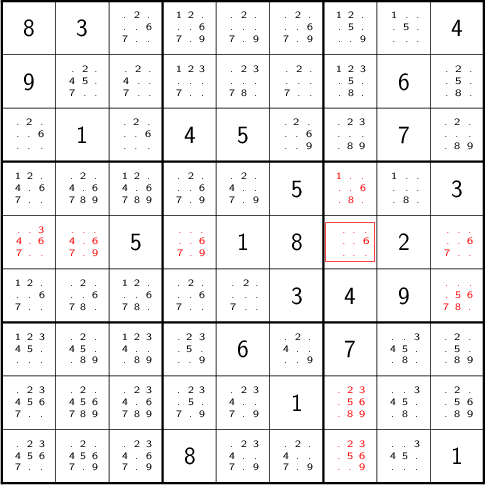
Continuing on in this way eventually yields
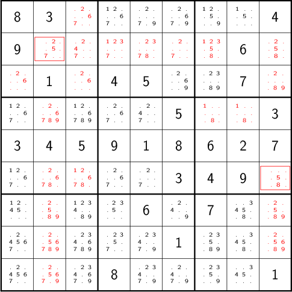
3.1.2 Single Placement/Hidden Single
While none of the unknown cells has only one possible value, there are two cells that each can only hold a 5. Marking and eliminating, we have
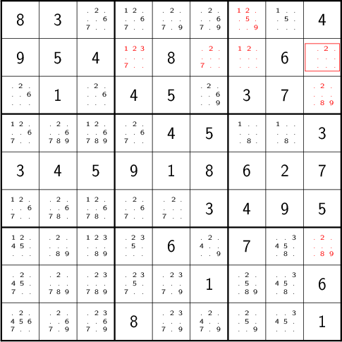
We can express the technique like so:
def mark_single_cells(bd): 'applies the "hidden single" rule' marked = False hidden = ((val, cells.pop()) for div in bd.div2cells for (val, cells) in placements(bd, div).items() if len(cells) == 1) for (val, cell) in hidden: if val in bd.unknown.get(cell, set()): bd.mark(cell, val) marked = True return marked
where
3.1.3 Rule of Exclusion
Whenever a value in a division is constrained to two or more cells, we can eliminate that value from any additional neighbors that those cells share:
def mark_excluded(bd): marked = False excluded = ((cell, val) for div0 in bd.div2cells for (val, cells) in placements(bd, div0).items() for div in (intersection(bd.cell2divs[cell] for cell in cells) - {div0}) for cell in bd.div2cells[div] - cells - set(bd.known) if val in bd.unknown[cell]) for (cell, val) in excluded: bd.elim(cell, val) marked = True return marked
where
3.1.4 Combining Strategies
We can continue applying these techniques, favoring the simplest whenever possible,
def mark_forced(bd): ''' iteratively applies single candidate, hidden single, and rule of exclusion until no further modifications are possible ''' fns = (mark_single_vals, mark_single_cells, mark_excluded) while any(fn(bd) for fn in fns): pass return bd
until we reach
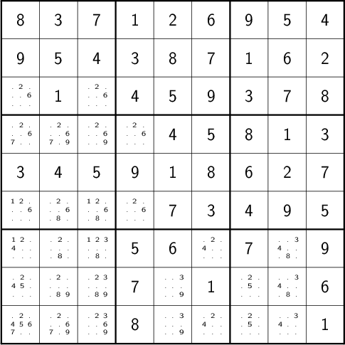
which will not yield to any of them. At this point, we have a couple options:
- We can crack open any number of guides on Sudoku to find other strategies that might apply, or,
- We can guess at the next play.
3.2 Searching
Rather than further accumulating strategies until we build up a corpus of Sudoku-solving lore, let’s do what any player out of options would do: Let’s guess. Once we’ve made our guess, we’ll play it out, using our deductive rules as we can, and guessing again as necessary. If it becomes clear that our guess is wrong, we’ll come back to this board state and try something else. In short, we’ll perform a depth-first search through the space of Sudoku boards.
Let’s consider what happens if we choose poorly:
- We’ll find ourselves back at our current board state, choosing a different cell/value assignment to try; and,
- We’ll have eliminated the cell/value combination we just tried as being valid for any board state derived from our current state.
So, if an incorrect guess allows us to prune part of the search space, we should structure our guessing so that each incorrect choice prunes as large a subtree as possible, allowing us to more quickly focus on the correct subtree. An easy and effective approach is to find the cell with the fewest possible values and then try each of them until we’re successful. So, choosing the red-boxed cell in
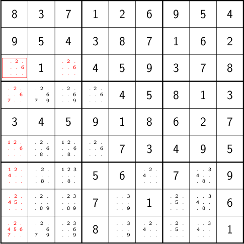
we can choose either a 2 or a 6. If the solution is ultimately derived from our current board state, then one of these values must be correct, giving a 50% chance of guessing correctly the first time. Should we exhaust both numbers without finding a solution, then there is no solution to be had from our current state–either the game is unsolvable or we previously made a mistake. A first draft might look like
def solve(bd): def _solve(bd): mark_forced(bd) if issolved(bd): yield bd else: _, cell, vals = min((len(vals), cell, vals) for (cell, vals) in bd.unknwon.items()) for val in vals: yield from _solve(bd.marked(cell, val)) return solve(bd.copy())
where
def issolved(bd): 'return True when no unknown cells remain. Assumes the board is valid.' return not bd.unknown
Because mark_forced results in modifications to the board passed in, rather
than a new board suitably modified, solve begins by making a copy of the
board to be solved; this gives us a pure functional interface.
Besides solving Sudoku puzzles, solve actually plays two key roles in the
puzzle generation procedure. The first of those is generating the solved
board. Once a cell is selected, there is no decisive advantage to preferring
one ordering of the possible values over another. Likewise, if there are two
or more cells meeting our minimum-values criterion, there is little reason to
prefer one over another. By randomizing both cell selection and value
ordering, we can retrieve all solutions of a given board in random
order. This allows us to pass solve a blank board, and the first solution
generated will be a randomly-selected Sudoku solution:
def solve(bd): def _solve(bd): mark_forced(bd) if issolved(bd): yield bd else: _, _, cell, vals = min((len(vals), random.random(), cell, vals) for (cell, vals) in bd.unknwon.items()) for val in random.sample(vals, len(vals)): yield from _solve(bd.marked(cell, val)) return solve(bd.copy())
for which we’d need
For reasons of both performance and controlling difficulty, we might need to limit the number of guesses needed to solve a given board.
def solve(bd, maxguesses=inf): def _solve(bd, depth=0): mark_forced(bd) if issolved(bd): yield bd elif depth < maxguesses: _, _, cell, vals = min((len(vals), random.random(), cell, vals) for (cell, vals) in bd.unknown.items()) for val in random.sample(vals, len(vals)): yield from _solve(bd.marked(cell, val), depth=depth+1) return _solve(bd.copy())
which requires
However, Python has a default maximum recursion depth of 1000 calls; when
generating solutions for boards requiring large numbers of guesses (e.g.,
when filling in blank boards of order 6 or larger), generating a
RecursionError is a very real possibility. This concern leads us to the
iterative implementation that we actually use.
def solve(bd0, maxguesses=inf): 'given a board bd0, generate all solutions in maxguesses guesses' stack = [(0, bd0.copy(), None)] while stack: depth, bd, delta = stack.pop() if delta: bd = bd.marked(*delta) mark_forced(bd) if issolved(bd): yield bd elif depth < maxguesses: _, _, cell, vals = min((len(vals), random.random(), cell, vals) for (cell, vals) in bd.unknown.items()) stack.extend((depth+1, bd, (cell, val)) for val in random.sample(vals, len(vals)))
Delaying production of each intermediate board until it’s required saves us significant amounts of memory when solving large boards.
Now, we can generate the final solution to our original puzzle:
next(solve(load_board(''' 8 3 . | . . . | . . 4 9 . . | . . . | . 6 . . 1 . | 4 5 . | . 7 . ------+-------+------ . . . | . . 5 | . . 3 . . 5 | . 1 8 | . . . . . . | . . 3 | 4 9 . ------+-------+------ . . . | . 6 . | 7 . . . . . | . . 1 | . . . . . . | 8 . . | . . 1 ''')))
yields
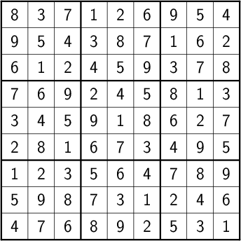
4 Generating Sudoku
To generate a puzzle, we’ll work backwards from the solution, iteratively testing each cell to determine whether the board remains proper—i.e., has exactly one solutions—if the cell is made an unknown. Those that can be masked out (i.e., rendered unknown) are; those that can’t become the clues. A naive first version would look something like
def generate_from(soln): known = soln.known.copy() order = int(len(known) ** 0.25) clues = {} new = lambda: marked_up(order, *known.items(), *clues.items()) while known: cell = random.choice(list(known)) val = known.pop(cell) if not isproper(new()): clues[cell] = val return new()
where
def isproper(bd): nsolns = 0 for soln in solve(bd): nsolns += 1 if nsolns > 1: break return nsolns == 1
and
def marked_up(order, *marks): ''' returns a new board of the given order, with the given marks, (cell, val) pairs, applied ''' bd = blank(order) for mark in marks: bd.mark(*mark) return bd
However, the naive procedure’s performance degrades rapidly with increasing
order—checking a board’s propriety requires solving it, and solve’s
complexity grows exponentially with the number of unknown cells. A few
measures can salvage this situation:
- We can safely mask out any cell that can be deduced based on the currently known cells.
- Checking whether masking out a given cell would result in proper board requires attempting to solve the board resulting from masking the cell. We can constrain the solver to only generate solutions within a certain number of guesses. Doing so allows a faster, though weaker, check for propriety. It also provides us a means of limiting the end result’s difficulty.
- The solver chooses from the unknown cells with the fewest possible values, i.e., it attempts to minimize the branching factor. We can limit unknown cells only to those that the solver would choose among.
We can estimate difficulty by multiplying the number of possibilities for each cell we mask; this represents the total number of choices that a perfect player would face.
The generation procedure we’ll actually use is
def generate_from(soln, minbranch=False, maxguesses=inf): ''' Generate a board for which soln is a solution, within at most maxguesses guesses. If set, minbranch restricts unknown cells to those that - can be easily deduced or - are among those with the fewest possible values. If maxguesses < inf, the generated board is guaranteed to be solvable within the prescribed number of guesses, but is not guaranteed to have only one solution. Returns (bd, difficulty) where bd is the generated board and difficulty is a difficulty estimate. ''' known = soln.known.copy() order = int(len(known) ** 0.25) clues = {} new = lambda: marked_up(order, *known.items(), *clues.items()) minunks = lambda bd: min(map(len, bd.unknown.values())) guesses = 0 difficulty = 1 while known: cell = random.choice(list(known)) val = known.pop(cell) bd2 = new() mark_forced(bd2) if cell in bd2.known: pass elif (guesses >= maxguesses or minbranch and len(bd2.unknown[cell]) > minunks(bd2) or not isproper(bd2, maxguesses=maxguesses, clue=(cell, val))): clues[cell] = val else: difficulty *= len(bd2.unknown[cell]) guesses += 1 return new(), difficulty
We know that marking the masked cell with the value it previously had will ultimately result in a solution; exploiting that knowledge when testing a board derived from a board known to be proper,
def isproper(bd, maxguesses=inf, clue=None): 'bd has exactly one solution within maxguesses guesses' nsolns = 0 if clue: cell0, val0 = clue nsolns += 1 for val in bd.unknown[cell0] - {val0}: for soln in solve(bd.marked(cell0, val), maxguesses): nsolns += 1 if nsolns > 1: return False else: for soln in solve(bd, maxguesses): nsolns += 1 if nsolns > 1: return False return nsolns == 1
We can now create puzzles of various sizes; for example, order 2:
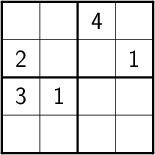
order 3:
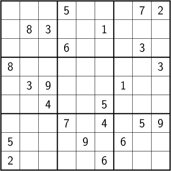
and order 4:
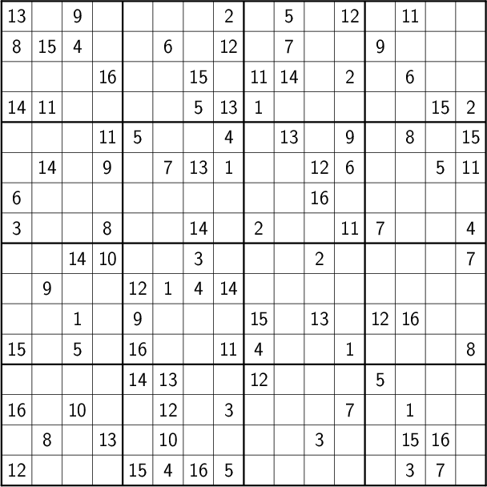
5 Utility Library
Before going any further, let’s package what we have so far into a library:
⟨sudoku/__init__.py⟩ ≡'useful utilities for manipulating Sudoku puzzles' ⟨imports⟩ ⟨data types⟩ ⟨functions⟩
The finished product is ./sudoku/__init__.py.
6 Command Line Tools
Having a library encapsulating the bulk of what we might wish to do, let’s make it more operationally useful by creating a series of tools that we can use from a command line or shell script.
⟨common⟩ ≡import sys def usage(): return __doc__.lstrip() % sys.argv[0] if __name__ == '__main__': if set(sys.argv) & {'-h', '--help'}: sys.exit(usage()) else: main(sys.argv[1:])
6.1 The Solver
The solver should read a board, as defined by load_board, from either a
file or standard input, and emit all the solutions to standard output. The
overall program structure should look something like
⟨bin/sudoku⟩ ≡⟨solver usage⟩ ⟨solver imports⟩ ⟨solver functions⟩ ⟨common⟩
where
⟨solver usage⟩ ≡''' Usage: %s [FILE] Find all solutions for a Sudoku puzzle. Options: -h, --help print this help and exit If FILE is omitted or `-', then the initial board is read from stdin. The input board should consist of a series of cells, each either a positive integer or a `.' to denote an unknown value, separated by any characters not in /[0-9.]/. The order of the board is automatically detected as the fourth root of the number of cells, and it must be an integer. The numerical values are constrained from 1 to order**2 inclusive. The solutions will always be ``pretty-printed'', e.g., solution 1: 4 2 7 | 1 3 6 | 5 8 9 6 5 1 | 9 2 8 | 4 7 3 3 8 9 | 5 4 7 | 1 6 2 ------+-------+------ 2 3 5 | 8 1 9 | 7 4 6 9 6 8 | 3 7 4 | 2 1 5 7 1 4 | 2 6 5 | 9 3 8 ------+-------+------ 8 9 6 | 7 5 1 | 3 2 4 1 4 3 | 6 9 2 | 8 5 7 5 7 2 | 4 8 3 | 6 9 1 solution 2: ... It is the case that a ``proper'' Sudoku can have only one solution; however, ``improper'' Sudoku puzzles do exist. '''
⟨solver imports⟩ ≡import sys import sudoku as sd
⟨solver functions⟩ ≡def main(argv): fn = argv[0] if argv else '-' try: bd = sd.load_board((sys.stdin if fn == '-' else open(fn)).read()) except ValueError: sys.exit('ill-formed board') for (i, soln) in enumerate(sd.solve(bd), start=1): assert sd.isvalid(soln) and sd.issolved(soln) print('solution %s:' % i) print(sd.dump_board(soln)) print()
to give our finished Sudoku solver.
6.2 The Generator
The overall structure for the generator is much like that of the solver:
⟨bin/sudokugen⟩ ≡⟨generator usage⟩ ⟨generator imports⟩ ⟨generator functions⟩ ⟨common⟩
where
⟨generator usage⟩ ≡''' Usage: %s [-o ORDER] [-g MAXGUESSES] [-m] Generate a Sudoku puzzle. Options: -h, --help print this help and exit -g MAXGUESSES when testing potential clues, restrict solver to a depth of MAXGUESSES -m only remove cells that can be deduced or have that might be among the best candidates If the computed puzzle is not proper (i.e., has exactly one solution), exits with nonzero status. '''
⟨generator imports⟩ ≡import getopt from math import inf import sudoku as sd
⟨generator functions⟩ ≡def main(argv): opts_, args = getopt.gnu_getopt(argv, 'g:mo:') opts = dict(opts_) order = int(opts.get('-o', 3)) maxguesses = int(opts['-g']) if '-g' in opts else inf minbranch = '-m' in opts soln = next(sd.solve(sd.blank(order))) bd, difficulty = sd.generate_from(soln, minbranch=minbranch, maxguesses=maxguesses) proper = sd.isproper(bd) print('difficulty:', difficulty) print('proper:', proper) print() print(sd.dump_board(bd)) print() print('> ' + sd.dump_board(soln).replace('\n', '\n> ')) if not proper: exit(1)
6.3 The Formatter
Having the means to both generate and solve Sudoku puzzles, the next thing is to nicely present them. We’ll generate Latex source code as an intermediate form, leaning on a custom Latex package for setting boards. Finally, we tie things together with a convenience script that orchestrates conversion from readable boards to transparent PNGs, like the figures in this article. What follows depends on Latex and ImageMagick.
6.3.1 Conversion to Latex
The overal structure of the Latex converter is
⟨bin/sudoku2tex⟩ ≡⟨formatter usage⟩ ⟨formatter imports⟩ ⟨formatter functions⟩ ⟨common⟩
where the usage statement is
⟨formatter usage⟩ ≡''' Usage: %s [OPTIONS] [HIGHLIGHT]... Given a Sudoku board, generate Latex source code. Options: x -h, --help print this help and exit -p print pencil marks for all unknown cells Cells are numbered sequentially from 0 in row-major order. Each HIGHLIGHT indicates a cell whose value (or pencil marks) will have its value surrounded by a red box; HIGHLIGHTs and any cell sharing a possible value with a HIGHLIGHT will have their possibilities set in red. In the absence of the -p option, only cells sharing a division with a HIGHLIGHT will be pencil marked. Used separately, the code generated by this program requires the sudokuii Latex package, included in the source repository (as latex/sudokuii.sty). '''
The Latex environment we’ll use expects as input something like
\begin{sudoku}[2] |1|2|3|4|. |1|2|3|4|. |1|2|3|4|. |1|2|3|4|. \end{sudoku}
The individual cells can contain more complex items than numbers, provided
they’re suitably wrapped. Generating the sudoku environment falls to
⟨formatter functions⟩ ≡ ↓def sudoku_env(bd, pencil_marks, special): ncells = len(bd.known) + len(bd.unknown) order = int(ncells**0.25) n = order**2 cells = [str(bd.known.get(i, ' ')) for i in range(ncells)] if pencil_marks: apply_pencils(bd, cells, order) reds = set() redboxes = set() for cell in special: dr, drb = highlight(cell, bd, cells, order) reds |= dr redboxes |= drb cells_fmtd = fmt_cells(cells, bd, reds, redboxes) grid = form_body(cells_fmtd, n) sudokusize = n/9 * (17 if pencil_marks or redboxes else 12) unitlength = sudokusize / n fboxsep = {2: 2, 3: 7, 4: 9}.get(order, 9) / 4 / n return f''' \\setlength\\sudokusize{{{sudokusize}cm}} \\setlength\\unitlength{{{1/n}\\sudokusize}} \\setlength\\fboxsep{{-{fboxsep}\\unitlength}} \\renewcommand\\sudokuformat[1]{{\\Huge\\sffamily#1}} \\begin{{sudoku}}[{order}] {grid} \\end{{sudoku}} ''' def form_body(cells, n): rows = [cells[i*n : (i + 1) * n] for i in range(n)] lines = ['|%s|.' % '|'.join(row) for row in rows] return '\n'.join(lines)
The calculations for sudokusize and fboxsep are the product of considerable
trial and error to determine what would look decent/reasonable/not terrible over
a range of board sizes.
Pencil marks should be formed in a square array containing just the values of interest and little else. In practice, we have to add some blank rows and columns to give more favorable placement in the cells.
⟨formatter functions⟩ +≡ ↑↓def pencils(possible, order): vals = [str(val) if val in possible else '.' for val in range(1, 1 + order**2)] coldesc = 'c' + 'c' * order grid = ' \\\\\n'.join(' & '.join(map(str, ['\\ \\ '] + vals[order*i : order*(i + 1)])) for i in range(order)) return f''' \\resizebox{{\\unitlength}}{{.6\\unitlength}}{{ \\begin{{tabular}}{{{coldesc}}} \\ \\\\ {grid} \\\\ \\ \\\\ \\end{{tabular}} }} ''' def apply_pencils(bd, cells, order): for (unk, vals) in bd.unknown.items(): cells[unk] = pencils(vals, order)
We wish to call out cells of interest, and we also want to indicate how constraints might propagate:
⟨formatter functions⟩ +≡ ↑↓def highlight(cell0, bd, cells, order): reds = set() redboxes = {cell0} for div in bd.cell2divs[cell0]: for cell in bd.div2cells[div] - set(bd.known): cells[cell] = pencils(bd.unknown[cell], order) if bd.unknown[cell0] & bd.unknown[cell]: reds.add(cell) return reds, redboxes
Once the pencil marks and highlights have been computed, we can format each cell to show pencil marks, highlighted cells, and the possible effects of constraint propagation:
⟨formatter functions⟩ +≡ ↑↓def fmt_cells(cells, bd, reds, redboxes): red = lambda s: '{\\color{red}%s}' % s redboxed = lambda s: '{\\color{red}\\fbox{%s}}' % s black = lambda s: '{\\color{black}%s}' % s return [redboxed(cell) if i in redboxes else red(cell) if i in reds else black(cell) for (i, cell) in enumerate(cells)]
With the formatting machinery out of the way,
⟨formatter imports⟩ ≡import getopt import sys import sudoku as sd
⟨formatter functions⟩ +≡ ↑def main(argv): try: opts_, args = getopt.gnu_getopt(argv, 'hp') special = {int(cell) for cell in args} except getopt.GetoptError: sys.exit(usage()) except ValueError: sys.exit(usage()) opts = dict(opts_) pencil_marks = '-p' in opts try: bd = sd.load_board(sys.stdin.read(), validate_vals=False) except ValueError: sys.exit('ill-formed board') not_special = set(special) & set(bd.known) if not_special: print("Won't hightlight known cells", not_special, file=sys.stderr) exit(1) print(sudoku_env(bd, pencil_marks, special))
Since we’re not attempting to generate solutions, it is not critical that input
boards be restricted in their cell values. Setting validate_vals to False
gives the flexibility needed for such things as illustrations of the division
memberships.
6.3.2 The Latex Package
Latex has had for years a package for formatting Sudoku boards, but it
focuses purely on the classic 9×9 grid. To get around this, we can create a
package of our own that redefines the sudoku environment to deal with
boards of any order.
⟨latex sudoku definitions⟩ ≡ ↓\renewenvironment{sudoku}[1][3]{ \newcount\order \order = #1 \newcount\n \n = \numexpr(#1*#1) \FPeval{\sudodelta}{1/#1/#1} \renewenvironment{sudoku-block}{ \catcode`\|=\active \@sudoku@activate \setcounter{@sudoku@col}{-1} \setcounter{@sudoku@row}{\numexpr(\n-1)} \setlength\unitlength{\sudodelta\sudokusize} \begin{picture}(\n,\n) \@sudoku@grid\@sudoku@grab@arguments }{ \end{picture} } \renewcommand*\@sudoku@grid{ \linethickness{\sudokuthinline} \multiput(0,0)(1,0){\numexpr(\n+1)}{\line(0,1){\n}} \multiput(0,0)(0,1){\numexpr(\n+1)}{\line(1,0){\n}} \linethickness{\sudokuthickline} \multiput(0,0)(\order,0){\numexpr(\order+1)}{\line(0,1){\n}} \multiput(0,0)(0,\order){\numexpr(\order+1)}{\line(1,0){\n}} \linethickness{0.5\sudokuthickline} \put(0,0){\framebox(0,0){}} \put(\n,0){\framebox(0,0){}} \put(0,\n){\framebox(0,0){}} \put(\n,\n){\framebox(0,0){}}} \begin{center} \begin{sudoku-block} }{ \end{sudoku-block} \end{center} }
The original \@sudoku@grab@arguments also presumes too much about its
input, which becomes a problem for boards of order 2.
\def\@sudoku@grab@arguments#1.{ \scantokens{#1.}}
Now we can assemble these with a bit of boilerplate and dependency information to form the finished Latex package.
⟨latex/sudokuii.sty⟩ ≡\NeedsTeXFormat{LaTeX2e}[1999/12/01] \ProvidesPackage{sudokuii}[2020/04/18 Big Sudoku] \RequirePackage{sudoku} \RequirePackage{fp} ⟨latex sudoku definitions⟩ \endinput
6.3.3 Converting Boards to Images
We can streamline board formatting a bit more. The output of sudoku2tex
is meant to be combined with sudokuii.sty in a Latex document, which would
then be converted to some convenient format. Let’s assume that that format
will be transparent PNG. The overall structure of the image converter will be
⟨bin/sudoku2img⟩ ≡⟨image converter functions⟩ ⟨handle image converter arguments⟩ ⟨image converter dispatch⟩
with the following usage:
⟨image converter functions⟩ ≡ ↓function usage() { cat <<EOF Usage: `basename $0` [OPTIONS] Generate images from Sudoku boards or puzzles (i.e., paired boards and solutions, as produced by sudokugen). Options -h, --help print this help and exit -P OUTDIR generate images for a puzzle. Expected input is of the form produced by sudokugen. At conclusion, OUTDIR will contain: - new.png the unsolved board - solved.png the completed board - penciled.png the unsolved board with pencil marks applied - input.txt the original input -- indicates the end of options for `basename $0`; any remaining arguments will be passed to sudoku2tex Input is taken from STDIN. EOF }
Let’s begin by wrapping the invocation of pdflatex into something we can
use in a pipeline:
function pipetex() { d=`mktemp -d` pushd $d >/dev/null { cat <<'EOF' > sudokuii.sty ⟨latex/sudokuii.sty⟩ EOF pdflatex --jobname tmp >/dev/null [[ -f tmp.pdf ]] && cat tmp.pdf } popd > /dev/null rm -rf $d }
Including the contents of sudokuii.sty in this way ensures that we always
have a copy on hand for this application, regardless of what happens on the
wider system. It also side-steps any issues that might arise from installing
in a non-/usr prefix, having a misconfigured TEXINPUTS, etc.
With pipetex defined, we can express conversion of the Latex for a single
board:
function topng() { convert - -trim -transparent white -colorspace RGB png:-; } function tex2png() { cat <<EOF | pipetex | topng \documentclass[border=2pt,varwidth=\maxdimen]{standalone} \usepackage{graphics} \usepackage{sudokuii} \usepackage{xcolor} \usepackage{tcolorbox} \begin{document} \begin{varwidth}{\linewidth} \huge $(cat) \end{varwidth} \end{document} EOF }
which then becomes a building block for the functionality we ultimately care about:
function convert_puzzle() { infile=$1 outd=$2 shift 2 mkdir -p $outd cp $infile $outd/input.txt egrep '>' $infile | sudoku2tex "$@" | tex2png > $outd/solved.png egrep -v '[:>]' $infile | sudoku2tex "$@" | tex2png > $outd/new.png egrep -v '[:>]' $infile | sudoku2tex -p "$@" | tex2png > $outd/penciled.png } function convert_board() { sudoku2tex "$@" | tex2png }
Once we deal with the command line arguments
⟨handle image converter arguments⟩ ≡while [[ "$1" ]]; do case "$1" in -h|--help) usage exit 0 ;; -P) shift outd="$1" problem=1 if ! [[ "$outd" ]]; then echo "'-P' requires output directory" usage exit 1 fi ;; --) shift break ;; *) echo unknown option "'$1'" usage exit 1 ;; esac shift done
we can get on with dispatching to the proper conversion routine:
⟨image converter dispatch⟩ ≡tmpfile=`mktemp` cat > $tmpfile err=0 if [[ "$problem" ]]; then convert_puzzle $tmpfile $outd "$@" elif grep -q difficulty $tmpfile; then echo 'sudokugen output detected; re-run with -P option.' >&2 err=1 else <$tmpfile convert_board "$@" fi rm -f $tmpfile exit $err
At this point, generating a large Sudoku is as simple as
sudokugen -o 5 -m -g2 | sudoku2img -P foo
Now we have something to occupy a good bit of time:
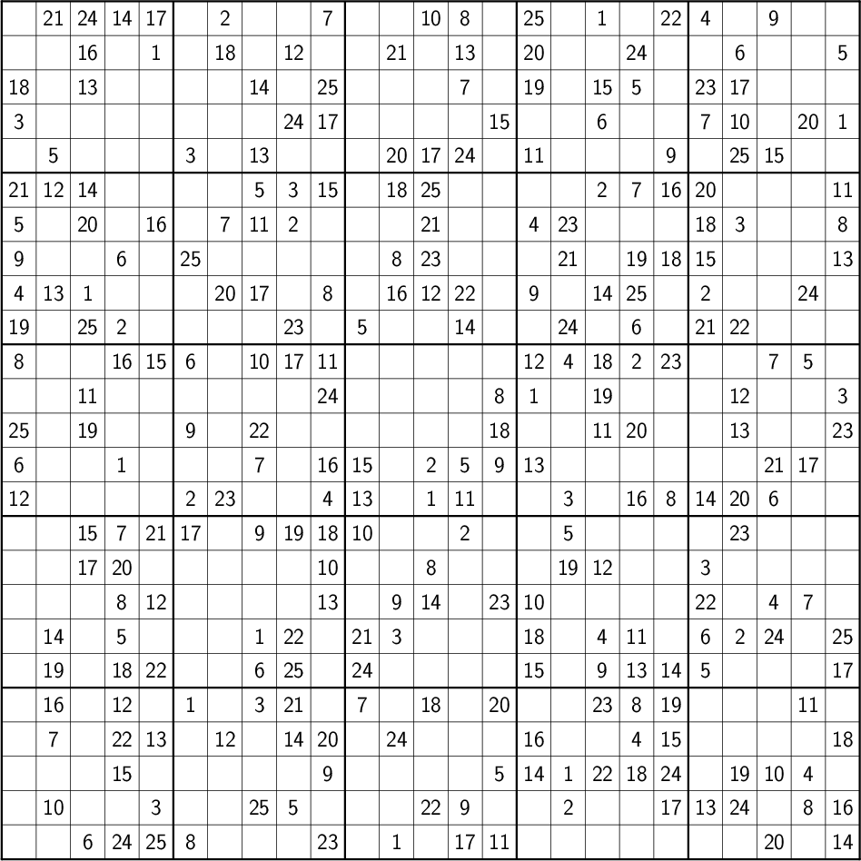
And, when we finally give up, here’s the solution:
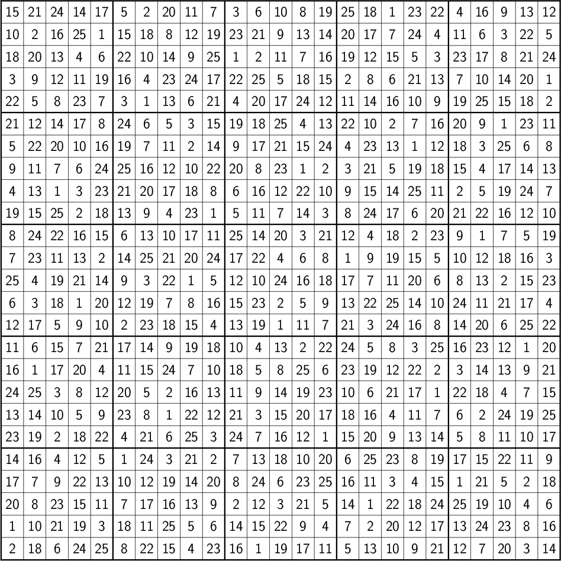
7 Putting It All Together
There’s just one more item to make this into a usable package.
⟨setup.py⟩ ≡import os from setuptools import setup, find_packages def ls(base): return [os.path.join(base, fn) for fn in os.listdir(base)] setup(name='sudoku', version='0.1', description='Sudoku', packages=find_packages(), scripts=ls('bin'), zip_safe=False)
Now installation is a simple
./setup.py install
away.
8 Performance
With all the work we’ve put in, how well does all of this perform? Let’s go by major use-case.
8.1 Generating Puzzles
The following depicts the run time distributions for creating puzzles, via
sudokugen, of orders 2–5, with maxguesses varying in ω steps from 0
to \(\omega^2\). Each pairing was run 100 times, and each run was capped at 300
seconds of real time.
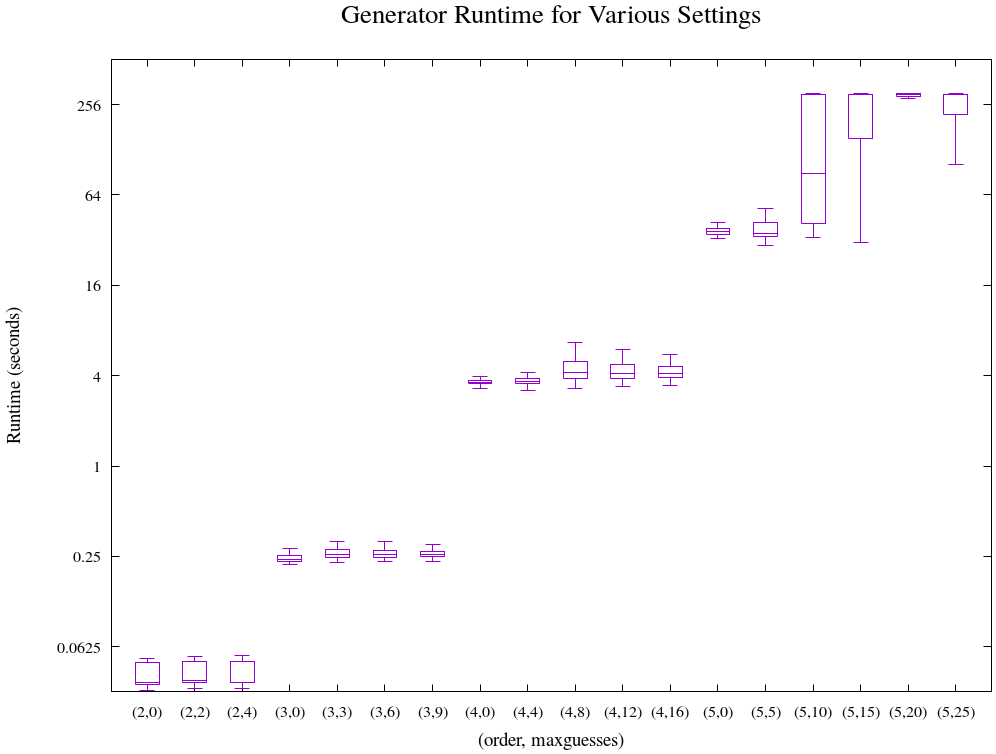
As a practical matter, maxguesses doesn’t seem to matter until order 5, at
least for performance. At order 5, though, once we allow 10 or more guesses,
generation time ramps up very quickly. (As a practical matter, though,
maxguesses is key to ensuring that humans can handle larger boards
manually.) We can get an alternate perspective by looking at how the mix of
job results varies:
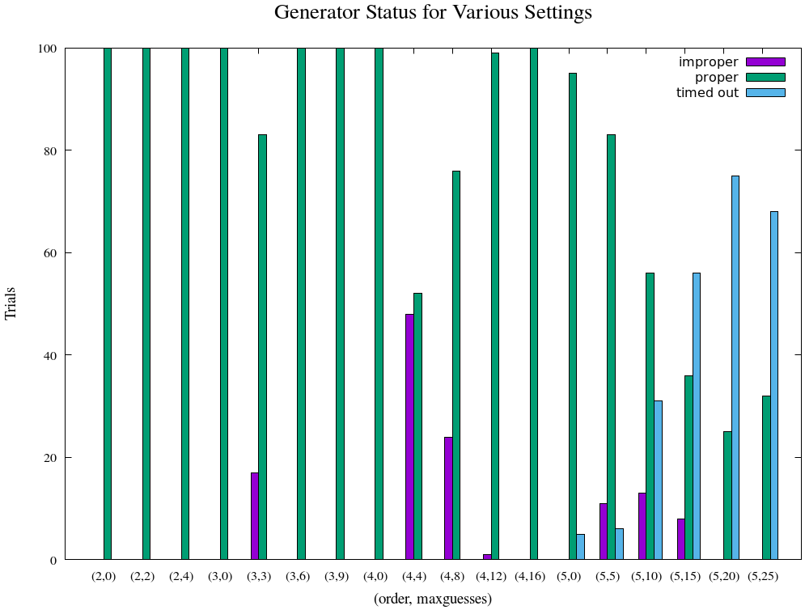
The explosion in generation time shows here in the growth of job timeouts. We
can also see the effect that maxguesses has on our ability to ensure that a
generated board is proper.
8.2 Solving
The generation test produced a total of 1438 proper boards. Solving each gives the following distribution of runtimes vs. generation parameters:
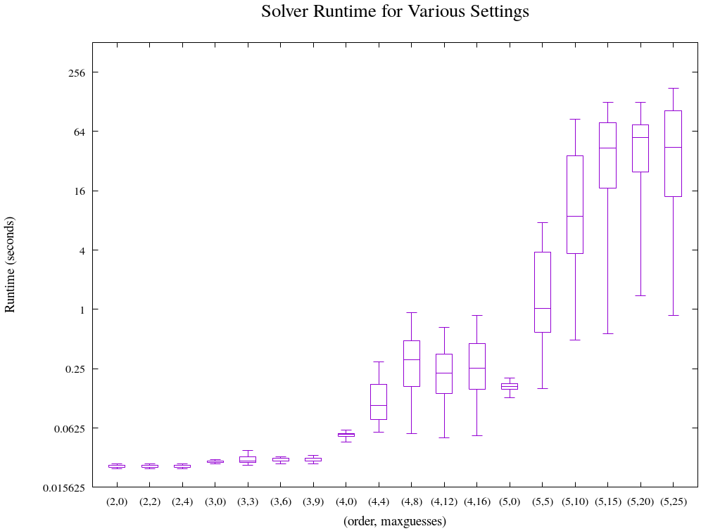
9 Wrapping Up
The library that implements all of the core logic for generating, solving, parsing, and serializing boards weighs in at 258 lines, excluding blanks; the command line tools, 363 lines. There is much, much more that we could do:
- We could create related tools that, rather than assuming the nested-grid structure that we’ve been enforcing so far, instead read the cell/division structure from a file, allowing us to lean on both the generation and solution logic for nearly arbitrary board arrangements (like Squiggly Sudoku or Jigsaw Sudoku).
- We could implement more strategies for solving puzzles, and then build out machinery for tracking which get used, allowing us to more meaningfully estimate difficulty.
- We could rework the formatting tools to jettison the dependence on Latex and ImageMagick.
- We could lavish attention on performance.
But there’s little reason. Now that we know how to generate and solve basically anything that is recognizably a Sudoku board, we can consider ourselves free to think of other problems, like register allocation and job scheduling.